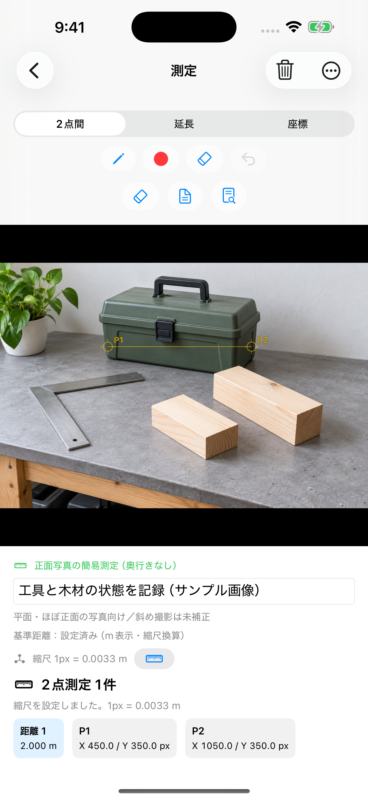
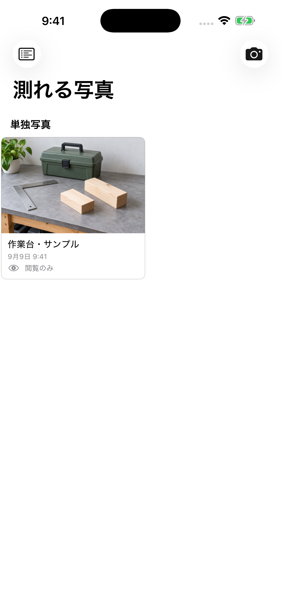
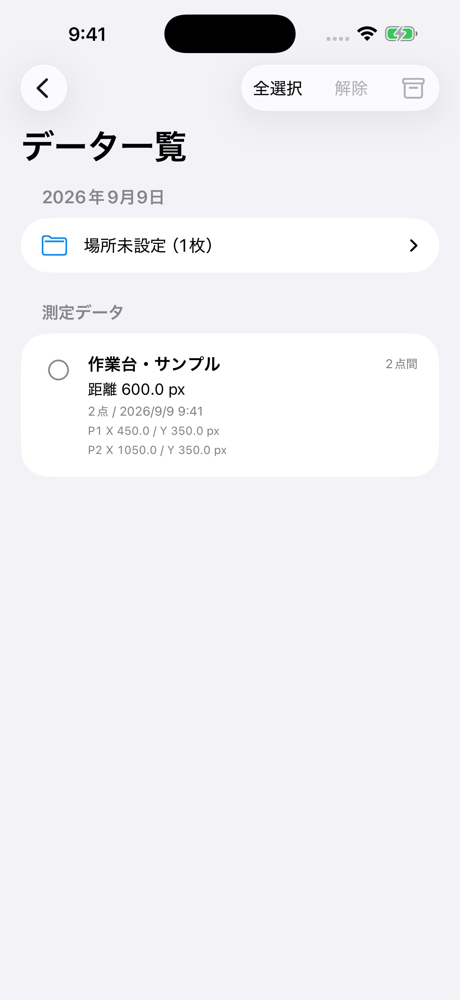

アプリ画面



実際のアプリをシミュレータで撮影した画面です。写真部分には生成したサンプル素材を使用しています。2.000mは基準距離を2mに設定した換算デモで、写っている物の実測値ではありません。斜め撮影の補正や奥行き測定の例ではありません。
写真・メモ・書き込みを無料で利用
- 通常撮影
- 写真追加、写真閲覧
- メモ、ペン書き込み
- 写真の共有
LiDAR測定機能
- 3D情報保存
- 写真上での2点間距離測定
- 任意基準による位置確認
- CSV出力、HTMLビューア出力
測定方法の違い
通常写真の測定
通常写真では写真上のピクセル距離を測定します。m表示への縮尺換算は、平らな対象をほぼ正面から撮影し、既知の長さの基準と対象が同じ平面にある場合の目安です。同じ平面でも斜め撮影では遠近による誤差が出ます。この誤差や奥行きの違いは補正されません。通常写真1枚から奥行きは取得できません。
通常撮影または写真追加で写真を保存し、必要に応じてメモやペン書き込みを追加できます。保存した写真はあとから確認し、共有できます。
LiDARなしのAR測定
撮影時に写真と一緒に保存したAR特徴点の3D座標から、奥行きを含む2点間距離を計算します。通常写真や取り込んだ写真だけでは利用できません。P1・P2はドラッグで調整でき、近くの取得済み3D点に合わせて距離を更新します。測定できる点がない場合は元の位置を保持します。測定値は撮影条件や選択点に影響されるため、必要な精度に応じて実測値と照合してください。
測定結果の削除
データ一覧の測定結果を左へスワイプして「削除」を選びます。複数の結果を選択し、「測定データ」見出し横のゴミ箱からまとめて削除することもできます。写真と撮影時の測定用データは残ります。
LiDAR測定
LiDAR対応端末で有料機能を購入すると、撮影時に保存した深度データから奥行きを含む距離を計算し、位置確認、CSV出力、HTMLビューア出力が利用できます。必要な精度に応じて実測値と照合してください。
For International Users
English support page — The current app interface is in Japanese.
Measurable Photo is designed for field work, inspections, construction notes, repairs, and photo records. Basic photo capture, importing, viewing, notes, pen markups, and sharing are free.
On LiDAR-compatible iPhone and iPad models, the paid measurement feature can save 3D information, measure two-point distances on photos, check positions, and export CSV or HTML viewer files.
よくある質問
LiDAR非対応端末でも使えますか？
はい。通常撮影、写真追加、閲覧、メモ、ペン書き込み、共有はLiDAR非対応端末でも利用できます。
購入しない場合はどうなりますか？
無料機能はそのまま使えます。LiDAR測定、CSV出力、HTMLビューア出力などの測定関連機能を選択したときに購入画面が表示されます。
Can I use the app outside Japan?
Availability depends on your App Store region. Ordinary photos use pixels, or an estimated scale from a known reference length. Depth-aware measurements require 3D information saved at capture time. The app interface is currently in Japanese.
購入を復元できますか？
はい。購入画面の「購入を復元」から、同じApple Accountで購入済みの機能を復元できます。
お問い合わせ
不具合やご質問がある場合は、以下のメールアドレスまでご連絡ください。
プライバシーポリシーは こちら です。